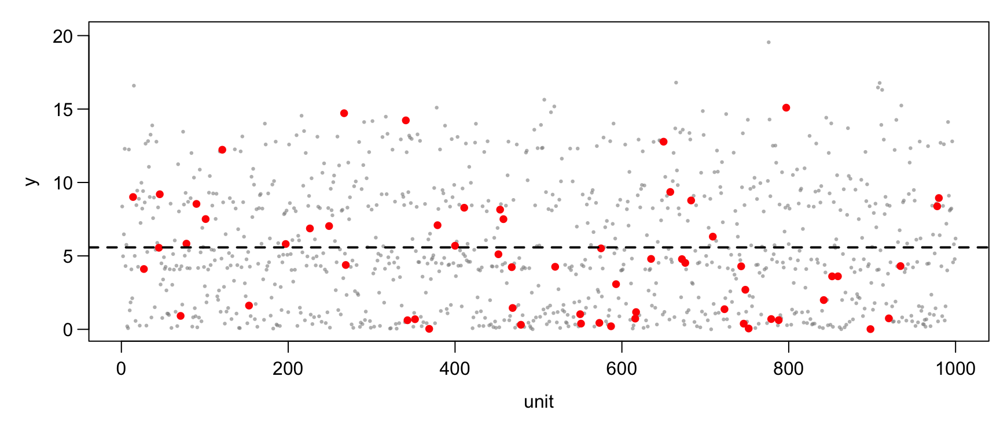
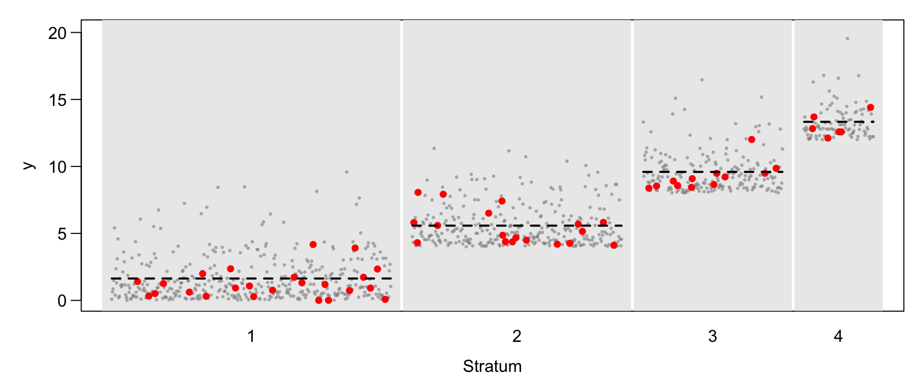
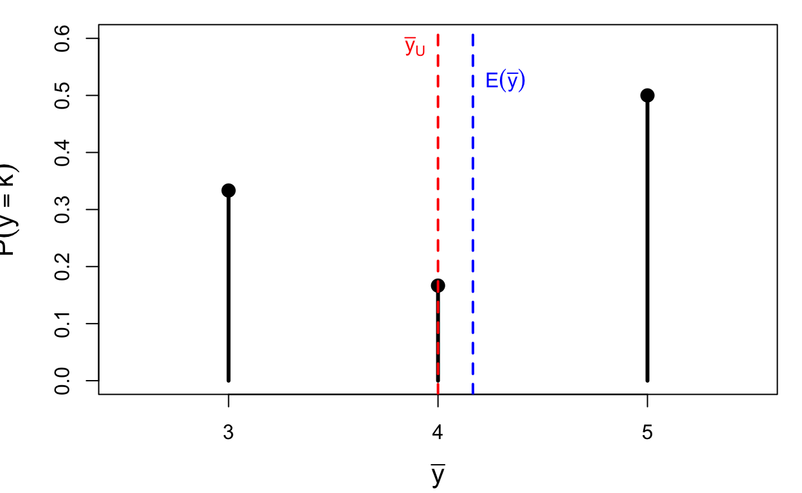
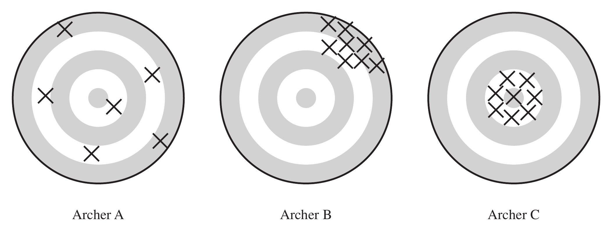

STAT 348 Sampling Techniques
Introduction to Sampling Survey
2026-10-23
1 A Bad Sampling Example
Reading suggestions:
- Lohr, Ch 1 and Section 2.2
- Scheaffer et al., Ch 2 and Sections 3.1–3.4
A Bad Sampling Example
Shere Hite’s book Women and Love: A Cultural Revolution in Progress (1987) had a number of widely quoted results:
- 84% of women are “not satisfied emotionally with their relationships” (p. 804).
- 70% of all women “married five or more years are having sex outside of their marriages” (p. 856).
- 95% of women “report forms of emotional and psychological harassment from men with whom they are in love relationships” (p. 810).
- 84% of women report forms of condescension from the men in their love relationships (p. 809).
The book was widely criticized in newspaper and magazine articles throughout the United States. The Time magazine cover story “Back Off, Buddy” (October 12, 1987) called the conclusions of Hite’s study “dubious” and “of limited value.”
What Went Wrong?
- The sample was self-selected—recipients of questionnaires decided whether they would be in the sample or not. Hite mailed 100,000 questionnaires; only 4.5% were returned.
- Questionnaires were mailed to organizations such as professional women’s groups, counseling centers, church societies, and senior citizens’ centers—groups whose viewpoints may differ from other women in the United States.
- The survey has 127 essay questions, most with several parts. Who will tend to return such a survey?
- Many questions are vague (e.g., “love”), making percentages hard to interpret.
- Many questions are leading, suggesting to the respondent which response to give.
2 Elements of Sampling Problems
Basic Definitions
Observation unit An object on which a measurement is taken; also called an element. In human population studies, observation units are often individuals.
Target population The complete collection of observations we want to study. Defining the target population is often difficult—for example, should a political poll target all eligible adults, all registered voters, or all who voted last election?
Sample A subset of a population.
Basic Definitions (cont’d)
Sampled population The collection of all possible observation units that might have been chosen in a sample—the population from which the sample was actually taken.
Sampling unit A unit that can be selected for a sample. We may want to study individuals but lack a list of them; instead, households serve as sampling units while individuals remain the observation units.
Sampling frame A list, map, or other specification of sampling units in the population from which a sample may be selected (e.g., a list of telephone numbers, street addresses, or farms).
Target vs. Sampled Population
In an ideal survey, the sampled population equals the target population, but this ideal is rarely met. Not all persons in the target population are in the sampling frame, and some in the frame are not reachable, refuse to respond, or are not capable of responding.

In the Hite (1987) study: the element was an individual woman, the target population was all adult U.S. women, but the sampled population was women belonging to women’s organizations who would return the questionnaire.
3 Selection Bias
Selection bias occurs when part of the target population is not in the sampled population, or more generally, when population units are sampled at a different rate than intended.
A sample of convenience is often biased, since units that are easiest to select or most likely to respond are usually not representative of harder-to-select or nonresponding units.
Selection Bias: Examples
- A convenience sample of adolescents used to study communication about AIDS likely overestimated parent-teen communication, since adolescents willing to talk to investigators are also more likely to talk to other authority figures.
- Misspecifying the target population: 1994 Arizona gubernatorial primary polls predicted Eddie Basha would trail by 9+ points; he won 37% of the vote. The polls targeted past primary voters, missing new rural voters who supported Basha.
Selection Bias: Coverage Problems
Undercoverage — failing to include all of the target population in the sampling frame. The U.S. Behavioral Risk Factor Surveillance System survey (telephone-based) misses households without phones, and historically missed cell-only households; coverage varies by region and income.
Overcoverage — including units in the sampling frame that are not in the target population, e.g., interviewers including under-18 respondents in an adults-only radio survey.
Selection Bias: Nonresponse
Failing to obtain responses from all of the chosen sample. Nonresponse distorts survey results even when other sources of selection bias are minimized.
Nonrespondents often differ critically from respondents, but the extent of that difference is usually unknown. Some published surveys have response rates as low as 10%—it is difficult to generalize results when 90% of the sample cannot be reached or refuses to participate.
4 Measurement Error
When a response differs from the true value, measurement error has occurred. Measurement bias occurs when responses tend to differ from the truth in one direction. Like selection bias, it must be considered and minimized at the design stage.
Measurement Error: Examples
- People don’t tell the truth. Farmers receiving food aid may underreport crop yields, hoping for more aid.
- People don’t understand questions. A 1993 Roper poll found 25% of Americans didn’t believe the Holocaust happened; after removing the confusing double-negative wording, only 1% agreed it was “possible” the Holocaust never happened.
- People forget. In the NCVS, respondents asked about crime victimization in the last six months sometimes include events from further back—called telescoping.
Questionnaire Design
- Always test your questions before taking the survey.
- Keep it simple and clear. Belson (1981) tested “What proportion of your evening viewing time do you spend watching news programmes?” on 53 people—only 14 correctly interpreted “proportion” as percentage/part/fraction.
- Use specific questions instead of general ones. Instead of “Did anyone attack you in the last six months,” the NCVS asks a detailed series: “With any weapon, for instance a gun or knife,” “With anything like a baseball bat, frying pan, scissors, or stick….”
5 Sampling and Nonsampling Errors
Sampling error results from taking one sample instead of examining the whole population—the basis for a poll’s margin of error. A different sample would likely give a different result; sampling errors are reported in probabilistic terms.
Nonsampling errors (selection bias, measurement error) cannot be attributed to sample-to-sample variability. They are often far larger than the reported sampling error—a survey may proudly report a 3% margin of error from a 30% response rate, while ignoring tremendous selection bias.
Why Sample at All?
- Sampling provides reliable information at far less cost than a census, and with probability samples you can quantify the sampling error. Some measurements are destructive (e.g., pulverizing a cookie to measure fat content), so a census is not even possible.
- Data can be collected more quickly, allowing timely estimates (an unemployment rate for 2005 published in 2015 is useless).
- Sample-based estimates can be more accurate than a census, since a smaller operation allows investigators to be more careful; a full census requires a large administrative effort involving many data collectors.
6 Overview of Probability Sampling and Estimation
In a probability sample, every unit has a known, positive chance of being selected, and the sample is chosen by a random mechanism. The illustrations use synthetic populations of N = 1000 units; each design selects n = 60 units (red).
Simple Random Sampling
A simple random sample (SRS) of size n is taken when every possible subset of n units in the population has the same chance of being the sample.

Figure 1
The units are listed in an arbitrary order; the dashed line is the population mean.
Stratified Random Sampling
The population is divided into strata, and an SRS is selected independently from each stratum. Stratification often increases precision because elements within a stratum tend to be more similar than elements of the whole population.

Figure 2
Strata of sizes 400, 300, 200, 100, sorted by their means; n_h = 24, 18, 12, 6 (proportional allocation).
Cluster Sampling
Observation units are grouped into larger sampling units called clusters; an SRS of clusters is selected, and units are observed (or subsampled) within them. E.g., take an SRS of churches, then survey members within the selected churches.

Figure 3
Three of ten clusters are selected (shaded) and 20 units are subsampled in each. Cluster sampling is convenient, but often less precise than an SRS of the same size.
7 A Framework for Probability Sampling
Concepts: Population, Sample, Sampling Probability, Inclusion Probability, Bias, Variance, MSE
The Population and Its Samples
The finite population, or universe, of N units is denoted by the index set \mathcal{U} = \{1, 2, \ldots, N\}.
Out of this population we can choose various samples, which are subsets of \mathcal{U}. The particular sample chosen is denoted \mathcal{S}, a subset consisting of n of the units in \mathcal{U}.
Example: suppose \mathcal{U} = \{1,2,3,4\} (N=4). Six different samples of size n=2 could be chosen: \mathcal{S}_1=\{1,2\}\quad \mathcal{S}_2=\{1,3\}\quad \mathcal{S}_3=\{1,4\}\quad \mathcal{S}_4=\{2,3\}\quad \mathcal{S}_5=\{2,4\}\quad \mathcal{S}_6=\{3,4\}
Probability Sampling
In probability sampling, each possible sample \mathcal{S} from the population has a known probability P(\mathcal{S}) of being chosen, and the probabilities of the possible samples sum to 1.
One possible design for a probability sample of size 2 from \mathcal{U}=\{1,2,3,4\}: P(\mathcal{S}_1)=\tfrac13,\quad P(\mathcal{S}_4)=\tfrac16,\quad P(\mathcal{S}_6)=\tfrac12, \quad P(\mathcal{S}_2)=P(\mathcal{S}_3)=P(\mathcal{S}_5)=0
These probabilities are known before the sample is drawn. One way to realize this design: place six labeled balls in a box — two labeled 1, one labeled 4, and three labeled 6 — then draw one ball at random; whichever label is drawn gives the sample \mathcal{S}_i. An SRS gives all six samples probability 1/6.
Notation for the Values y_i
Let y_i be a characteristic associated with the ith unit in the population. We treat y_i as a fixed quantity: if farm 723 is in the sample, the corn yield y_{723} is known exactly.
| i | 1 | 2 | 3 | \cdots | N |
|---|---|---|---|---|---|
| y_i | y_1 | y_2 | y_3 | \cdots | y_N |
Note
y_i is not a random variable in Lohr’s book. In Scheaffer’s book, y_i is used for the population value and Y_i is a random variable.
Inclusion Probability and Sampling Weight
Once we have chosen a sample design, each unit in the population has a known probability of appearing in the selected sample: \pi_i = P(\text{unit } i \text{ in sample}) = \sum_{\mathcal S \ni i} P(\mathcal S), the sum of the probabilities of all possible samples that contain unit i. In probability sampling, all \pi_i are known before the survey commences, and we assume \pi_i > 0 for every unit in the population.
Sampling weight: w_i = 1/\pi_i. For many sampling schemes, the population total estimator can be written as \hat t = \sum_{i \in \mathcal{S}} w_i \, y_i = \sum_{i \in \mathcal{S}} \frac{y_i}{\pi_i}.
Example: Inclusion Probabilities
For \mathcal{U}=\{1,2,3,4\}, N=4, n=2, with the sample design above:
| \mathcal{S}_i | \{1,2\} | \{2,3\} | \{1,3\} | \{2,4\} | \{1,4\} | \{3,4\} |
|---|---|---|---|---|---|---|
| P(\mathcal{S}_i) | 1/3 | 1/6 | 0 | 0 | 0 | 1/2 |
\pi_1 = P(\{1,2\}) = \tfrac13, \qquad \pi_2 = P(\{1,2\})+P(\{2,3\}) = \tfrac13+\tfrac16=\tfrac12, \pi_3 = P(\{2,3\})+P(\{3,4\}) = \tfrac16+\tfrac12=\tfrac23, \qquad \pi_4 = P(\{3,4\}) = \tfrac12 .
Note \sum_{i=1}^4 \pi_i = 2 = n, not 1: each sample contains n=2 units.
Population Quantities: Total, Mean, Variance
\textbf{Total:}\quad t = \sum_{i=1}^N y_i \qquad \textbf{Mean:}\quad \bar y_{U} = \frac{t}{N} = \frac{\sum_{i=1}^N y_i}{N}
\textbf{Variance:}\quad S^2 = \frac{1}{N-1}\sum_{i=1}^N (y_i-\bar y_{U})^2 \qquad \textbf{Standard deviation:}\quad S = \sqrt{S^2}
Note
In Scheaffer’s book, \displaystyle \sigma^2 = \frac1N \sum_{i=1}^N (y_i - \bar y_{U})^2 (divides by N, not N-1).
Example: A Population Proportion
| i | 1 | 2 | 3 | 4 | 5 |
|---|---|---|---|---|---|
| y_i | 1 | 0 | 0 | 0 | 1 |
t = \sum_{i=1}^5 y_i = 1+0+0+0+1 = 2 \qquad \bar y_{U} = \frac{2}{5} = 40\% \ \text{(population proportion)} S^2 = \frac{1}{5-1}\Big((1-0.4)^2\times 2 + (0-0.4)^2\times 3\Big) = 0.3
Note
For a 0/1 population, S^2 = \frac{N}{N-1}p(1-p) = \frac54(0.4)(0.6) = 0.3, which tends to p(1-p) as N becomes large.
Example: Number of Devices per Household
| i | 1 | 2 | 3 | 4 |
|---|---|---|---|---|
| y_i | 2 | 4 | 4 | 6 |
t = \sum_{i=1}^4 y_i = 2+4+4+6 = 16 \qquad \bar y_{U} = \frac{16}{4} = 4 S^2 = \frac{1}{4-1}\Big((2-4)^2+(4-4)^2+(4-4)^2+(6-4)^2\Big) = \frac{8}{3}
Statistic and Sampling Distribution
Statistic
A statistic is a function of the observations in a sample, used for estimating a population quantity.
Sampling distribution
The sampling distribution is the distribution of a statistic under repeated sampling.
Example: to estimate t we may use \hat t = N\bar y, with \bar y = \frac1n\sum_{i\in\mathcal S} y_i. For the devices population (n=2, N=4), \hat t = 4\bar y; the true values are \bar y_U = 4 and t = 16.
Example: Sampling Distribution of \bar y
All six possible samples of size 2 from \{y_1,\ldots,y_4\}=\{2,4,4,6\}:
| \mathcal S_i | \{1,2\} | \{1,3\} | \{1,4\} | \{2,3\} | \{2,4\} | \{3,4\} |
|---|---|---|---|---|---|---|
| values | 2, 4 | 2, 4 | 2, 6 | 4, 4 | 4, 6 | 4, 6 |
| P(\mathcal S_i) | 1/3 | 0 | 0 | 1/6 | 0 | 1/2 |
| \bar y | 3 | 3 | 4 | 4 | 5 | 5 |
Collecting equal values of \bar y gives the sampling distribution of \bar y:
| k | 3 | 4 | 5 |
|---|---|---|---|
| P(\bar y = k) | 1/3 | 1/6 | 1/2 |
Plot of the Sampling Distribution

Figure 4
Bias, Variance and MSE of \bar y
\begin{aligned} E(\bar y) &= 3\times\tfrac13 + 4\times\tfrac16 + 5\times\tfrac12 = \frac{25}{6} \\[4pt] \text{Bias}(\bar y) &= E(\bar y) - \bar y_{U} = \frac{25}{6} - 4 = \frac16 \\[4pt] V(\bar y) &= E\big[(\bar y - E(\bar y))^2\big] \\ &= \Big(3-\tfrac{25}{6}\Big)^2\tfrac13 + \Big(4-\tfrac{25}{6}\Big)^2\tfrac16 + \Big(5-\tfrac{25}{6}\Big)^2\tfrac12 = \frac{29}{36} \approx 0.806 \\[4pt] \text{MSE}(\bar y) &= E\big[(\bar y - \bar y_{U})^2\big] \\ &= (3-4)^2\cdot\tfrac13 + (4-4)^2\cdot\tfrac16 + (5-4)^2\cdot\tfrac12 = \frac56 \approx 0.833 \end{aligned}
The design favours \{3,4\}, which contains the household with 6 devices, so \bar y tends to be too large.
MSE = Bias^2 + Variance
Adding and subtracting E(\hat\theta): \text{MSE}(\hat\theta) = E\Big[\big(\hat\theta - E(\hat\theta)\big) + \big(E(\hat\theta) - \theta\big)\Big]^2 = V(\hat\theta) + \big(\text{Bias}(\hat\theta)\big)^2 , since the cross term has expectation zero.
Check with our example: \text{Bias}(\bar y)^2 + V(\bar y) = \Big(\frac16\Big)^2 + \frac{29}{36} = \frac{30}{36} = \frac56 = \text{MSE}(\bar y) \checkmark
When \hat\theta is unbiased, \text{MSE}(\hat\theta) = V(\hat\theta).
The Same Population under SRS
If all six samples have probability 1/6 (an SRS), the six values of \bar y are 3, 3, 4, 4, 5, 5: E(\bar y) = 4 = \bar y_U \quad \text{(unbiased)}, \qquad V(\bar y) = \tfrac16(1+1+0+0+1+1) = \tfrac23 .
This agrees with the SRS variance formula (next lecture): V(\bar y) = \Big(1-\frac nN\Big)\frac{S^2}{n} = \frac12\cdot\frac{8/3}{2} = \frac23 .
Unbiased, Precise, and Accurate
An estimator \hat t of t is:
- unbiased if E(\hat t) = t
- precise if V(\hat t) = E\big[(\hat t - E[\hat t])^2\big] is small
- accurate if \text{MSE}(\hat t) = E\big[(\hat t - t)^2\big] is small
A badly biased estimator may be precise but will not be accurate: accuracy (MSE) is how close the estimate is to the truth, while precision (variance) measures how close estimates from different samples are to each other.

Summary
The finite population \mathcal U consists of units \{1,2,\ldots,N\} with measured values \{y_1,y_2,\ldots,y_N\}. We select a sample \mathcal S of n units from \mathcal U using the probabilities of selection that define the sampling design.
The y_i’s are fixed but unknown quantities — unknown unless that unit happens to appear in our sample \mathcal S. Bias, variance and MSE all refer to the distribution of an estimator over the possible samples.